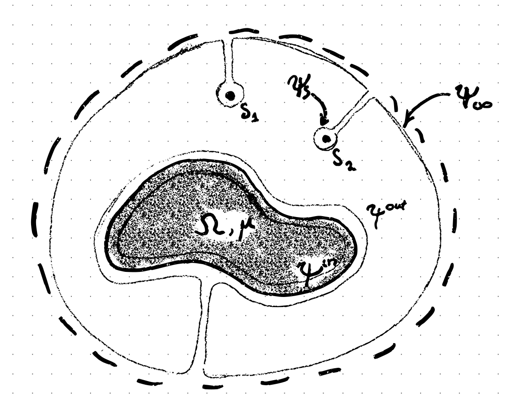

Theory and introduction
Since ancient times people had wondered what makes amber rubbed with fur to attract small light objects and what makes lodestones, naturally magnetized pieces of the minereal magnetite, to atract iron. Nowadays we do have an answer that the force comes from magnetization or polarization gradient. However, even for linear materials, the computation of the force is a challenge due to secondary field effects. Fortunately, boundary integral methods can save our day[1], which are implemented in this library and can be used to calculate the field and so also a force at an arbitrary object's surface.
To start with we introduce a potential $\psi$ whose gradient is either electric or magnetic field. In absence of singularitities (charges, dipoles and etc.) the potential satisfies Laplace equation $\Delta \psi = 0$ which can also be written in boundary integral form:
This integral is flexible in the sense that we can wrap the surface around singularities, infinity and objects and we can apply it to the interior of objects with linear properties.
Let's consider the system shown in the figuere:

We have singularites denoted by $S_n$, object $\Omega$ and infinity $\infty$. Since at infinity the field perturbation of the object is vanishingly small we can set it equal to free field. Similarly the field near the singularity is equal to the field of the singularity and we can neglect effects of the body. Thus we have identity:
where left side is integral over surface of singularities and infinity and the right side is the field in absence of bodies.
To model the bodies inside the field we only need to set a appropriate boundary conditions which are:
This particular package is built with a following boundary conditions
which implies a linear material. Applying the boundary integral to the interior of the object and matching boundary conditions with exterior surface we arrive at useful formula:
Which we can apply to obrtain boundary integral equation for the potential
where we used identity $\int_{\partial \Omega} \frac{\partial}{\partial n_x} \frac{1}{|\boldsymbol x - \boldsymbol y|} dS_{\boldsymbol x}=0$ for regularization.
Another way of writting Laplace equation in BIE form is as follows:
math
From a similar arguments we obtain
Applying boundary conditions give us a formula
which we substitute back to obtain:
It is interesting to note that it is a Biot-Svarat integral over the surface current which models the field configuration in presence of object. A regularized version can be obtained (look into article on magnetic liquid droplet)
Implementation and API
The boundary integral equations are solved with collocation metheod on a triangular mesh. The simplest quadrature $\int_\Delta f dS = (f_1 + f_2 + f_3)/3$ is used for all nonsingular elements. In order to obtain tangential derivatives of the potential we use numerical differentiation of previosly calculated potential and use least squares to solve the overdetermined system. And lastly for Biot-Savarat integral weakly singular quadrature is implemneted to deal with elements near the singularity where for other elements $\int_\Delta f dS = (f_1 + f_2 + f_3)/3$ is used.
LaplaceBIE.normalderivatives — Method.normalderivatives(points,normals,topology,P∇ψ,μ,∇ψ0::Function; eps=0.0001, NP=100)Calculates ∇ψ.n approached to the object surface from interior region. To use the function surface properties points, normals and topology are required. To use the function it is required to have a tangential field components (see tangentialderivatives and surfacepotential), boundary jump condition μ and a gradient of external free field.
LaplaceBIE.surfacepotential — Method.surfacepotential(points,normals,topology,μ,ψ0::Function)Returns a surface field for a given shape defined by a triangular mesh with points, normals and topology and for a boundary conditions where ∇ψ has a jump in th e normal direction charectarized with μ and for the external free field given by a potential ψ0.
LaplaceBIE.tangentderivatives — Method.tangentderivatives(points,normals,topology,ψ)Returns tangential derivative P∇ψ for a shape defined by points, normals and topology.
Erdmanis, J. & Kitenbergs, G. & Perzynski, R. & Cebers, A. (2017) Magnetic micro-droplet in rotating field: numerical simulation and comparison with experiment